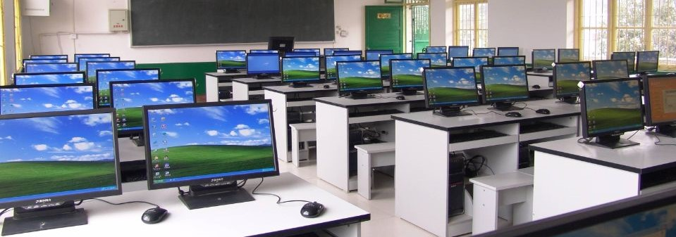
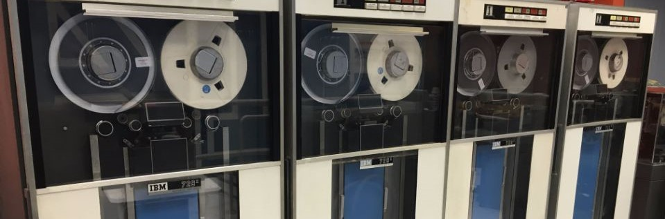

专业介绍
计算机信息管理

核心课程：ASP.NET程序设计、数据库原理及其应用、SQL Server数据库、Photoshop平面设计基础、网页设计与网站规划、多媒体应用基础、医院管理学、中医药基础、医学基础等。
培养目标：培养具有一定的医药学知识背景，较强的信息收集、处理、应用和分析能力，能够熟练运用、管理及设计数据库系统、管理信息系统的高素质技能型专门人才。
就业趋向：适应于在IT行业及企、事业单位，尤其是医疗卫生相关行业，从事办公自动化，信息的采集、加工和管理，信息管理软件的建设、应用、管理和维护等工作。
计算机专业介绍

计算机专业是指计算机硬件与软件相结合、面向系统、更偏向应用的宽口径专业。通过基础教学与专业训练，培养基础知识扎实、知识面宽、工程实践能力强，具有开拓创新意识， 在计算机科学与技术领域从事科学研究、教育、开发和应用的高级人才。
计算机学科的特色主要体现在：理论性强，实践性强，发展迅速按一级学科培养基础扎实的宽口径人才，体现在重视数学、逻辑、数据结构、算法、电子设计、 计算机体系结构和系统软件等方面的理论基础和专业技术基础，前两年半注重自然科学基础课程和专业基础课程，拓宽面向。后一年半主要是专业课程的设置， 增加可选性、多样性、灵活性和方向性，突出学科方向特色，体现最新技术发展动向。